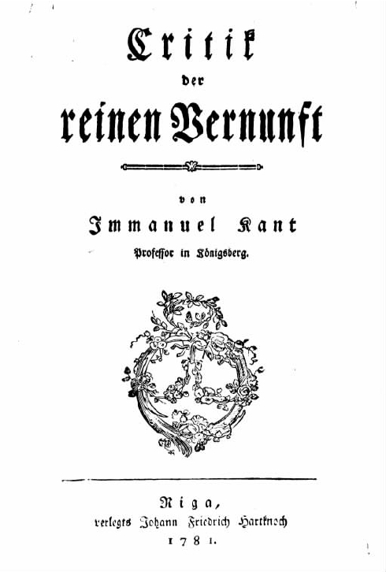
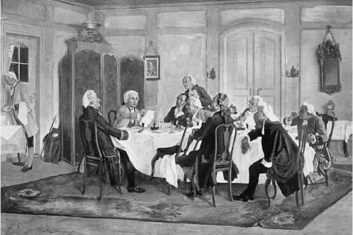
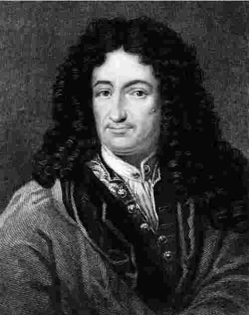
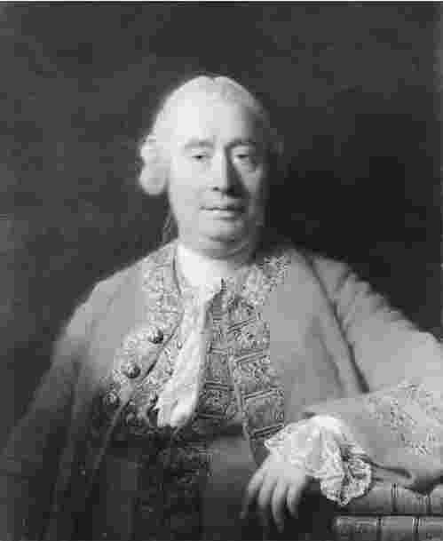
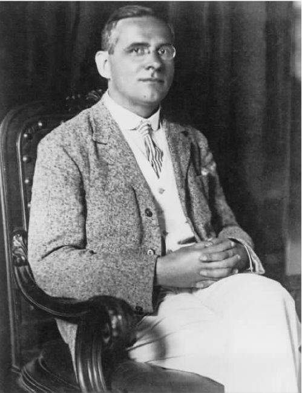

《纯粹理性批判》是现代史上所写下的最为重要的哲学著作，也是最难读懂的著作之一。它提出的问题很新奇，包罗万象，所以康德认为很有必要创造一些术语来讨论这些问题。这些术语有一种奇特的美感和吸引力。他的词汇把秩序和关联性强加给传统的哲学问题，体验不到这一秩序和关联性就难以充分欣赏康德的作品。然而，康德思想的主旨是可以用较低层次的习语来表达的，接下来的内容我会尽可能不用他的术语。这项任务并不容易，因为对康德术语的意义没有公认的解释。尽管康德体系的整体画面对评论过它的所有人来说都是一样的，但是对于他的论点的说服力甚至具体内容却众说纷纭。评论者给出的前提和结论尽管都很清楚，还是无一例外地被指责为遗漏了康德的论点，而唯一可以避免学术指摘的方法就是蹈袭原著用语的诘屈聱牙风格。近年来，遭受这种批评的危险又更多了些。当代的康德研究——尤其是在英国和美国——倾向于认为，康德学术研究的晦涩难懂常常是其混乱不清导致的结果。为了不把混乱归咎于康德，学者们不辞辛苦地从第一部《批判》中生发出或者至少是强加上一套使其明白易懂的阐释。我也会试着这样做，而带给我影响的这些当代研究恕我不能一一致谢。
由阐释《纯粹理性批判》引出的第一个问题是：它希望回答什么问题？康德在第一版的前言里写到：
（《纯粹理性批判》第1版，序言，xiii）
这种说法代表了第一部《批判》的雄心（尽管不是成就），但康德的动机实际上是一些更为具体的兴趣。如果我们转向历史上康德式观点的先例，就可以从影响过他的哲学论战中，抽取争论的一些主要论题。我们所发现的最重要的内容将是客观知识问题，该问题笛卡尔曾经提出过。我对我自己可以了解很多，并且这种知识常常具有确定性的特征。根据笛卡尔的观点，怀疑我存在是尤其没有道理的。这里，怀疑只不过证实了被怀疑的对象。我思故我在。在这种情况下，我至少拥有客观知识。我的存在这个事实是一个客观事实；它是关于这个世界的事实，而不仅仅是关于某个人的感知。不管这个世界包含什么，它都包含了一个思维着的存在，这个存在就是我。康德的同时代人利希滕贝格指出，笛卡尔不应该得出这种结论。“我思”表明存在一种思想，但是并不表示有一个我去思考。康德同样不满意笛卡尔的观点，按照从这些观点中推出的灵魂理论，他认为自我知识的确定性受到了错误描述。的确，不论我对这个世界有多么地怀疑，我都不可能把这种怀疑延伸到主观领域（意识领域）：所以我能够直接确定自己当下的精神状态。但是我无法直接确定我是什么，或者确定实际上是否存在一个这些状态所归属的“我”。这些进一步的命题必须通过某种观点来建立，而那样的观点还有待发现。

图5 《纯粹理性批判》（第1版）
这种直接而又确定的知识具备什么样的特征呢？我当下精神状态的区别性特征在于：它们如其向我所呈现的，并显得如其所是。在主观领域，存在与似在彼此重合。在客观领域，它们又分道扬镳。世界之所以是客观的，是因为它还可以区别于向我所呈现的样子。因此，关于客观知识的真正问题是：我怎样才能认识世界的本来面目？我可以认识到世界自我呈现 的样子，因为那只不过是关于我当下的感知、记忆、思想以及情感的知识。但是我是否可以拥有一种知识，这种知识完全不是关于这个世界看似如何的知识？以一种更加一般的方式来表述这个问题就是：我能够拥有不仅仅从我自己的角度来获得的关于这个世界的知识吗？科学、常识、神学以及个人生活都假定客观知识是可能的。如果这种假定没有根据，那么我们共同怀有的几乎所有信仰也都是没有根据的。
在距离康德最近的前辈中，有两个人尤其为客观性问题提供了答案，这些答案足够明确，引起了知识界的关注。这两人就是莱布尼茨（1646—1716）和大卫·休谟（1711—1776）；前者主张我们能够拥有不受任何观察者的观点影响的客观知识；后者主张（至少在他同时代的人看来是）我们不可能获得任何客观知识。
莱布尼茨是普鲁士学院派哲学的奠基者。他的思想反映在留给世人的那些未曾出版的只言片语中，这些思想由克里斯蒂安·冯·沃尔夫（1679—1754）构建成了一个体系，又由沃尔夫的学生、曾做过牧师的鲍姆嘉通（1714—1762）加以应用和扩展。在康德年轻的时候，莱布尼茨的思想体系受到了官方的责难，因为它所提出的理性主张威胁到了信仰主张；沃尔夫曾经一度被禁止教书。但是在腓特烈大帝统治时期，这个体系又重新受到欢迎，并成为德国启蒙运动正统的形而上哲学。康德尊重这个正统，并且直至晚年他还用鲍姆嘉通的著作作为自己讲座的教材。但是休谟的怀疑主义给康德留下了深刻的印象并提出了新的问题，这些问题使康德感到只有推翻莱布尼茨的思想体系才能得到解答。这些问题涉及因果关系和先天知识（即无经验依据的知识），并且和客观问题结合在一起形成了第一部《批判》的独特主题。

图6 康德与论友围坐桌边（埃米尔·德斯特林作于约1900年）
莱布尼茨所属的学派现在一般被贴上了“唯理论”的标签，休谟属于“经验论”学派，这两派通常是对立的。这种简单而又存有争议地将前辈分成唯理论和经验论的方式实际上归功于康德。他相信这两个哲学学派在结论上都是错误的，因此尝试着描述一种吸收这两个学派的真理、避免它们各自错误的哲学方法。唯理论从对理性的运用中获得关于知识的所有断言，旨在对世界作出绝对的描述，不受观察者个人经验的影响。它尝试用上帝之眼观察实在。经验论则主张知识仅仅来自于经验；因此，把知识同认识者的主观条件分开是不可能的。康德希望对客观知识的问题作出解答，这种解答既不像莱布尼茨的那样绝对，也不像休谟的那样主观。为了理解康德的独特立场，最好的方法是先总结他力图摒弃的这两种观点。

图7 戈特弗里德·威廉·莱布尼茨（1696 [1] —1716）
莱布尼茨相信理智本身就包含着某些固有的原则，这些原则理智从直觉上就知道是正确的，因此它们构成了对世界的完整描述所依赖的公理。这些原则必然是正确的，不需要依靠经验就得到了确立。因此，有了它们，世界就得到了如其所是的描述，而不会像在经验中或是通过有条件的“观点”所呈现的那样被描述。同时，这些“观点”具有个体特征，可以被融入世界的理性图景中。莱布尼茨在思维中识别出主词和谓词之间的区分（在“约翰思考”这个句子中，主词是“约翰”，谓词是“思考”）。他认为这个区分对应于实在中的实体和属性。世界上最基本的客体就是实体。他认为实体是自立的，不像内在于它们的属性：举个例子，一种实体无须思维就可以存在，但是凡是思维都需要实体。自立的实体也是无法毁坏的，除非用一种奇迹般的方法。莱布尼茨把它们叫做“单子”，他的单子的模型是个体灵魂，是思维实体，就如笛卡尔曾经描述的那样。从这个观念出发，他获得了关于世界的“无视角”图像，依靠的是两个基本的理性原理：矛盾律（一个命题和它的否定命题不可能同时为真）和充足理由律（没有充足解释的事情不能为真）。通过精巧而细致的论证以及最少的可能性假设，他得出了以下结论。
这个世界由无穷多单个的单子构成，这些单子既不存在于空间中也不存在于时间中，它们永恒地存在着。每个单子在某些方面与其他任何一个都不同（著名的“不可分辨物的等同性”定律）。没有这个假设，客体就不能依其本质特性得以辨识；于是，为了将事物区分开来，采取何种视角就变得很必要，而莱布尼茨则主张世界的真正本质可以不采取任何视角就能认识。每个单子之所以需要一个视角，只是为了有一种表征其内部构成的方式；它并不表征如其内部所是的那个世界。每个单子都从自己的视角像镜子一样反映世界，但是没有哪个单子可以进入与其他单子的真正关系中，无论这种关系是因果性的还是其他性质的。甚至空间和时间也都是理性的建构物，通过这种建构物我们才使自己的经验能够被理解，但是这一建构物并不属于世界本身。然而，根据“前定和谐”原则，每个单子的连续性特征都对应于其他单子的连续性特征。所以，我们可以把我们心智的连续状态描述为“感知”，这个世界将会“显现”在每个单子的面前，显现方式则与世界在其他任何单子面前所显现的方式一致。这些现象中有一个体系，在此体系内，谈及以下几个方面都是有意义的：空间关系、时间关系和因果关系；可被破坏的个体和动力原则；知觉、活动和影响。这些观念以及从中得出的物理定律，其有效性依赖于它们所描述的观点之间的根本和谐。这些观念和定律只是间接地产生由单子构成的实在世界的知识，因为我们能够确知，事物显现的方式具有事物存在方式的形而上学印记。当两只手表显示完全相同的时间时，我会倾向于认为其中一只引起了另一只走动。这个例子说明了一种单纯的表面的关系。莱布尼茨用差不多同样的方式证明，由常识性信仰和感知构成的整个世界只不过是表象或“现象”。但是他声称这是“有根有据的现象”。它不是幻相，而是理性原则的运行所引起的必然而系统的结果，这些原则决定着事物事实上如何。实在的实体，由于不是通过某种视角而得到描述和识别，所以就不具备现象的特点。实在本身只有通过理性才是可及的，因为只有理性才可以超越个体的视角，看到终极必然性，同时也是上帝的必然性。因此，理性必须通过“天赋”的观念来起作用。这些观念的获得不通过经验，它们属于全体会思考的存在者。这些观念的内容不有赖于经验，而有赖于理性的直觉能力。这些观念中有一种是实体观念，莱布尼茨的所有原理都是由此而来。
休谟的观点从某种程度上来说与莱布尼茨的观点正相反。他否认通过理性来获得知识的可能性，因为离开观念理性就不能起作用，并且观念只能通过感觉来获得。归根结底，每个思想的内容必须来源于证实它的经验；只有借助于为其提供保证的感觉“印象”，信念才能被确立为真。（这是经验论的基本假设。）但是为我证实一切事物的唯一经验就是我的经验。其他人的或记录的证据、对定律或假设的制定、对记忆和归纳的依赖——所有这一切的权威性都有赖于为其提供保证的经验。我的经验是其所似并似其所是，因为这里的“似”就是存在着的一切。因此，不存在我如何认识它们这个问题。但是，休谟把所有的知识都建立在经验之上，而把我对世界的知识归结为关于我的观点的知识。所有对客观性的要求都变得虚假和虚幻。当我声称拥有关于存在于我感知之外的客体的知识时，我实际上唯一想说的是那些感知展现了一种连贯性和一致性，这种连贯性和一致性生成了独立性这个（虚幻的）观念。当我提到因果必然性时，我有资格所意指的一切就是经验之中的常规性接续，再加上从这种接续生发出来的主观期望之感。对于理性来说，这可以告诉我们“观念之间的关系”：比如，它可以告诉我们空间这个观念包含在形状这个观念中，也可以告诉我们单身汉这个观念和没有结婚的男人这个观念是一致的。但是它既不能产生自己的观点，也不能决定一个观念是否有可应用性。它仅是从词语意义派生出的细微知识的源泉；它从来都不能得出关于事实的知识。休谟的怀疑主义走得太远，以至于对自我（这个自我为莱布尼茨的单子提供了模型）的存在提出质疑，并且声称既没有根据这个名字命名的可感知客体，也不存在能够产生关于该客体之观念的任何经验。
这种怀疑主义回溯到它所源自的最根本的观点，让人无法忍受；所以并不奇怪的是，康德正如他自己所说的那样是被休谟从“教条主义的迷梦”（《未来形而上学引论》，9）中唤醒。休谟哲学中最困扰康德的部分关系到因果关系这个概念。休谟主张自然中不存在笃信必然性的基础：必然性只属于思想，并且仅仅反映了“观念之间的关系”。正是这一点导致康德认为，自然科学是建立在存在着实在必然性这一信念之上的，所以休谟的怀疑论就存在着破坏科学思想之基础的威胁，它绝不是一种学术作为。康德的确与莱布尼茨及其体系有过长久的争论。但是，客观性与因果必然性问题有着终极的关联，正是这一认识把康德引向了《纯粹理性批判》中的思路。直到那时，他才通过试图指出休谟的真正错误所在而认识到了莱布尼茨的真正错误。他开始作出如下思考。

图8 大卫·休谟（1711—1776）
经验和理性都不能独立地提供知识。前者提供没有形式的内容，后者则提供没有内容的形式。只有二者结合起来，才使获得知识成为可能；所以，不同时带有理性印记和经验印记的知识是没有的。不论如何，这样的知识是真实的和客观的。它超越了知识拥有者的观点，并且对一个独立世界给出了合理的论断。不过，要认识那个“如其自身存在的”、不受所有视角影响的世界是不可能的。康德认为，这种对知识客体的绝对观念是没有意义的，因为这种观念的给出只能借助于概念的运用，并且这些概念中的每一个意义元素都已被抽空。即使我可以不受我自己观点的影响去认识世界，我所认识的内容（即“表象”的世界）也还是烙上了那个观点的无法消除的印记。客体并不依赖于我感知到它们而存在，但是它们的本质却是由它们能被感知这个事实决定的。客体不是莱布尼茨的单子，只对“纯粹理性”的无观点态度是可知的；也不是休谟的“印象”，即我自己的经验的特征。它们是客观的，但是其特征是观点所给予的，正是通过观点它们才能被认识。这就是“可能经验”的观点。康德试图表明，如果得到恰当理解，“经验”这个观念已经带有休谟所否定了的客观的指称。经验在其自身之中 就包含了空间、时间和因果关系这些特征。所以在描述我的经验时，我所指的是一个独立世界的有序景观。
为了介绍客观性这个崭新的概念（他用“先验唯心论”来命名），康德先从探究先天知识开始。在真正的命题中，有些不依赖经验即为真，不论经验如何改变依然为真：这些是先天真理。其他的命题，其真实性则取决于经验，如果经验不同，这些命题或许就是假的：这是后天真理。（这里的术语不是康德发明的，尽管由于康德经常使用而使它们很流行。）康德认为先天真理有两种，他称做“分析的”和“综合的”（《纯粹理性批判》第1版，6—10）。分析真理如“所有单身汉都没有结婚”，它之所以为真是由表达它的术语的意义来保障的，并且是通过分析这些术语来发现的。综合真理的真理性不是这样得出的，而是如康德解释的那样，通过在谓项中断定主项中所没有包含的东西得来。这种真理如“所有的单身汉都是未满足的”（假设这是真实的），它表述的是关于单身汉的某些实质，不仅仅是在重复用来指代它们的那个术语的定义。分析和综合的区分涉及到新的术语，尽管在早期哲学家那里也能找到类似的区分。受到波伊提乌的启发，阿奎纳把不证自明的命题定义为在这种命题中“谓项包含在主项的概念中”；类似的观念也可以在莱布尼茨的思想中发现。然而，康德的创造性在于，他坚持认为这两种区分（即先天的和后天的，以及分析的和综合的）在本质上完全不同。如果认为它们必须契合，只不过是经验论者的独断论而已。可是，如果经验论者的观点正确，就不存在综合的先天知识：综合真理只可能通过经验获得。
经验论者的立场在当代已被“维也纳学派”的逻辑实证主义者接受，他们主张所有的先天真理都是分析的，并得出这样一个结论：任何形而上学的命题必定没有意义，因为它既不可能是分析的也不可能是后天的。对康德来说，经验论否定了形而上学的可能性，这很明显。但是，如果要为客观知识提供基础，形而上学是很必要的：没有它，就无法想象还有什么能够阻挡休谟的怀疑论。所以，所有哲学的首要问题就变成：“综合的先天知识如何才是可能的？”或者用另一种方式来说：“我怎样才能通过纯粹的反思而不借助经验就可以认识这个世界？”康德觉得，对于将认识对象同认识者的视角区分开来的先天知识，不可能作出任何解释。因此，对于任何人企图声称我们能够获得关于永恒、无限的“物自体”（即不用参照一个观察者的“可能经验”就被定义的任何对象）世界的先天知识，他都持怀疑态度。我只能对我所经验的世界拥有先天知识。先天知识为经验性的发现提供支撑，但是它也从经验发现中获得内容。康德的第一部《批判》部分地将矛头指向这样一个假定：“纯粹理性”不用参照经验就可以为知识赋予内容。

图9 莫里茨·石里克（1882—1936），维也纳学派领军人物
所有的先天真理既是必然的又是绝对普遍的：必然和绝对普遍是两个标志，依据它们我们可以在关于知识的主张中识别那些先天为真的知识项——如果它们确实为真的话。因为很明显的是，经验绝不会赋予任何事物以必然性或绝对普遍性；任何经验本来都可能是另一种情形，经验必然是有限的和个别的，因此，普遍性法则（它具有无限多的个例）永远不会被经验所真正证实。没有人应该真正地怀疑存在着综合的先天知识。康德用数学作为最显著的例子：我们通过纯粹的推理而非对数学术语涵义的分析来认识数学。对数学的先天性应该有哲学上的解释，康德试图在第一部《批判》的开篇部分就给出这样的解释。但是，他也对其他一些令人迷惑的例子予以了关注。例如，下面的命题就似乎先天为真：“每个事件都有原因”；“世界是由不依赖于我而存在的永恒客体组成的”；“所有可被发现的客体都存在于空间和时间之中”。这些命题都不能通过经验来确立，因为它们的真理性在对经验的阐释中已经预先设定了。此外，每个命题声称为真不是在这种或那种场合，而是普遍地和必然地为真。最后，正是这样的真理被要求用来证实客观性。因此，客观性问题和综合的先天知识最终联系在了一起。此外，上述真理在所有科学解释中起到的至关重要的作用说服了康德，使他相信客观性理论也为自然必然性提供了解释。由此，这样的理论就可以对休谟的怀疑论给出完整的答案。
那么，康德在第一部《批判》中的目的是什么呢？首先，与休谟相对，其目的是为了说明综合的先天知识是可能的，并且提供相关例子。其次，与莱布尼茨相对，证明如果不顾及经验所施加的限制因素来进行推演，单独的“纯粹理性”只能导致幻相，因此不存在关于“物自体”的先天知识。根据论题的分野，将第一部《批判》分为两部分是很正常的：第一部分是“分析性的”，第二部分是“辩证性的”。尽管这个划分和康德对章节的划分（极为复杂，充满了专门语汇）不完全对应，但却足够严密，不会误导读者。术语“分析性的”和“辩证性的”为康德所用，论证的两分法也一样。在第一部分，康德对客观性的辩护得以阐释；我将从对“分析性”的论证入手，因为只有把握了这一部分才可能理解康德形而上学的本质，理解他日后从中发展出来的道德、美学和政治理论的本质。